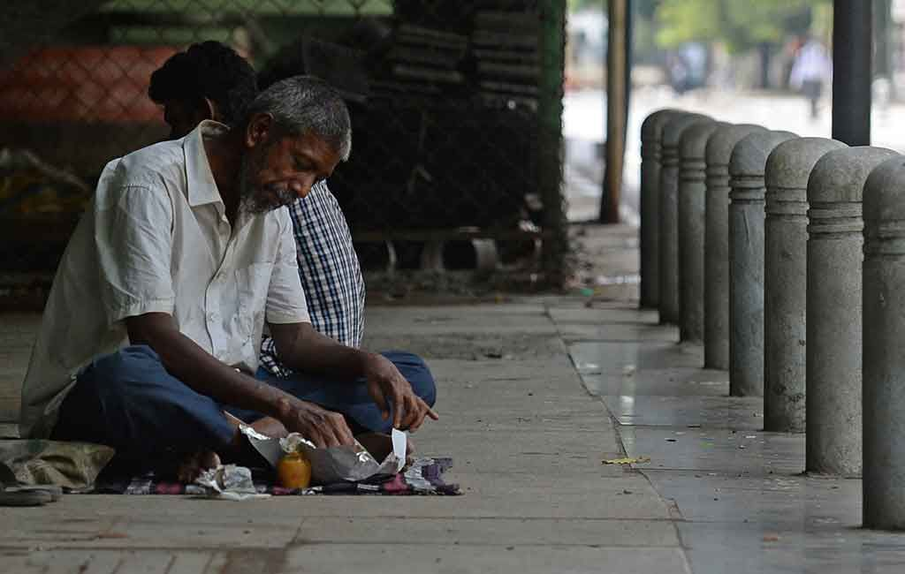
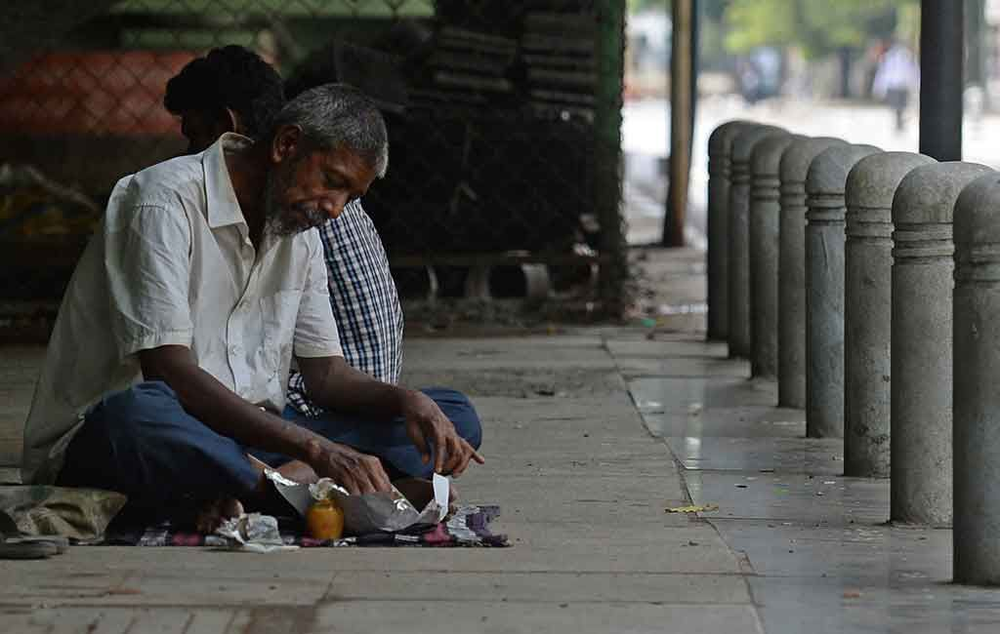

.jpg)
HAI HAI SEMUA ! apa kabar nih kalian ??
sehat dong jangan sakit sakit.
ehh aku punya pantun loh
jalan jalan ke maluku
lalu kembali ke kayangan
selamat datang di websiteku
tentang mengurangi ketimpangan
 



Kondisi Indonesia sebelum serius menjalankan Sustainable Development Goals (SDGs), terutama tujuan ke-10 tentang pengurangan kesenjangan, masih berada dalam zona “jingga gelap”. Artinya, Indonesia menghadapi tantangan besar terkait ketimpangan sosial dan ekonomi yang cukup parah.
Ketimpangan pendapatan yang diukur dengan koefisien Gini masih tinggi, bahkan sempat meningkat pada periode 2002–2015. Pertumbuhan ekonomi yang baik tidak mampu menurunkan kesenjangan antara kelompok kaya dan miskin secara signifikan.
Ketimpangan ini juga terlihat antarwilayah. Daerah perkotaan dan pulau besar memiliki perkembangan jauh lebih baik dibandingkan pedesaan dan pulau kecil. Kondisi ini membuat banyak masyarakat sulit mengakses pendidikan, kesehatan, dan lapangan pekerjaan yang layak.
Pada akhir pemerintahan SBY, tingkat kemiskinan sempat menurun, namun meningkat sedikit pada awal pemerintahan Jokowi. Ini menunjukkan bahwa meskipun ekonomi berkembang, kesenjangan pendapatan dan kemiskinan masih menjadi masalah serius.
Tantangan lain datang dari pengelolaan sumber daya yang belum merata, kebijakan publik yang tidak selalu tepat sasaran, serta tata kelola pemerintahan yang masih menghadapi isu korupsi dan efisiensi. Faktor-faktor inilah yang membuat Indonesia masuk ke kategori “zona jingga gelap” dalam SDGs khususnya pada tujuan pengurangan ketimpangan.
Dengan kondisi awal tersebut, Indonesia mulai fokus menjalankan berbagai kebijakan untuk mengurangi kesenjangan, seperti pemberdayaan ekonomi masyarakat miskin, peningkatan akses layanan dasar, perlindungan sosial, serta pemerataan pembangunan menuju masyarakat yang lebih adil dan berkelanjutan.